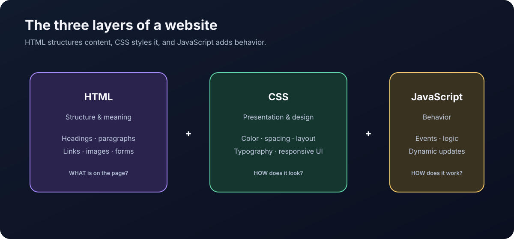
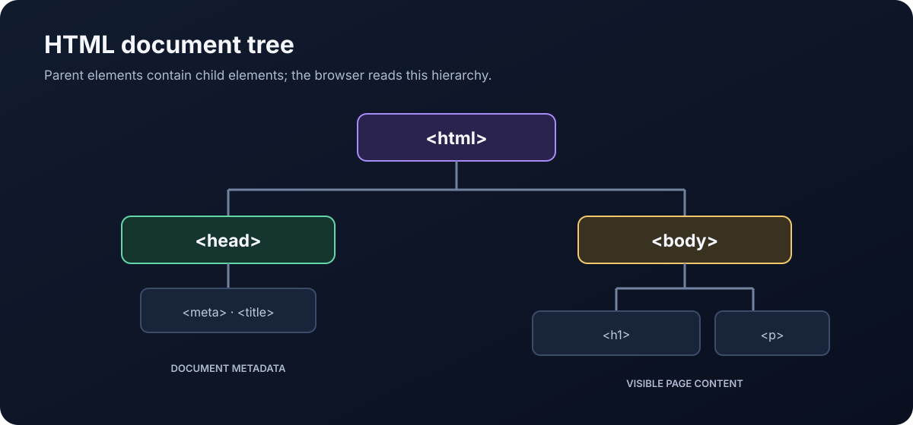
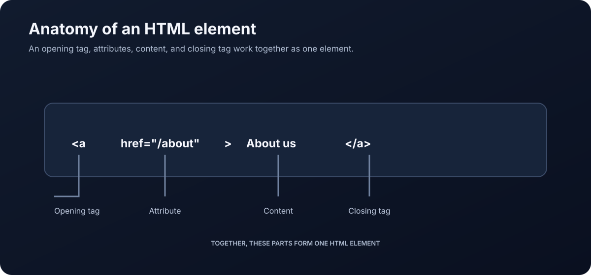
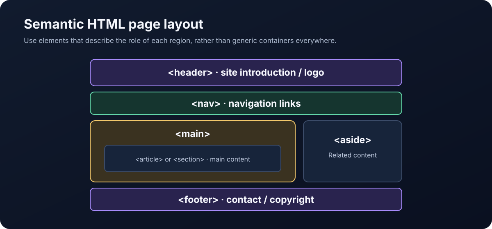
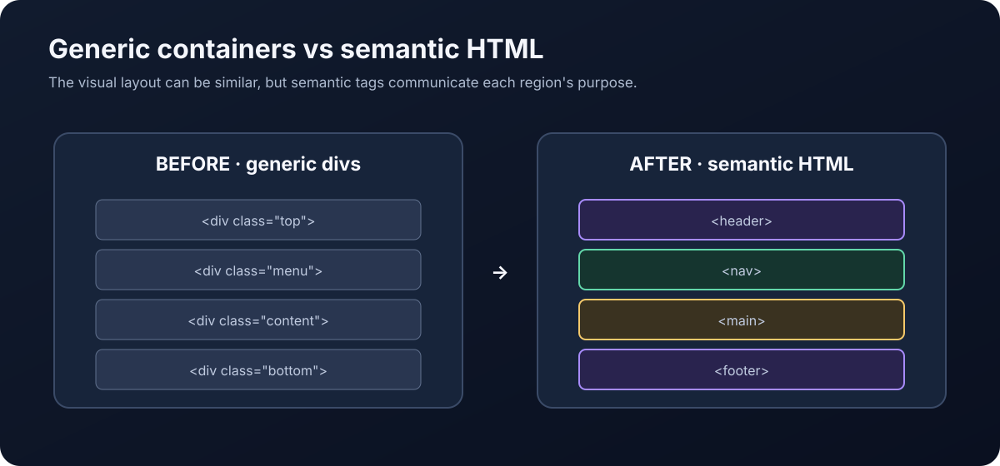

01 · THE BIG PICTURE
What is HTML?
HTML (HyperText Markup Language) adalah bahasa markup yang digunakan untuk menyusun struktur dan makna konten halaman web. HTML memberi tahu browser apakah suatu konten merupakan judul, paragraf, tautan, gambar, tabel, atau formulir.
HTML bukan bahasa pemrograman seperti JavaScript atau Python. HTML tidak menjalankan logika seperti perulangan atau perhitungan. HTML mendeskripsikan konten; CSS mengatur tampilannya; JavaScript menambahkan perilaku interaktif.

What is the impact?
Tanpa HTML, browser tidak memiliki struktur dokumen yang jelas. Dengan HTML, konten dapat dikenali, dibaca, diberi styling oleh CSS, dan diakses oleh teknologi bantu seperti screen reader.
02 · DOCUMENT FOUNDATION
HTML document structure
Setiap halaman HTML umumnya memiliki kerangka dasar. Bagian head menyimpan informasi tentang
dokumen, sedangkan body berisi konten yang ditampilkan di halaman.
<!DOCTYPE html>
<html lang="en">
<head>
<meta charset="UTF-8">
<meta name="viewport" content="width=device-width, initial-scale=1.0">
<title>My First Page</title>
</head>
<body>
<h1>Hello, world!</h1>
<p>This is my webpage.</p>
</body>
</html>
Visual: document tree
HTML bersifat hierarkis: elemen dapat menjadi parent atau child dari elemen lain.
Penjelasan setiap baris
| Code | Purpose / Fungsi | Impact |
|---|---|---|
<!DOCTYPE html> |
Mendeklarasikan dokumen sebagai HTML modern (HTML5). | Browser menggunakan mode standar untuk merender halaman. |
<html lang="en"> |
Elemen root; lang menyatakan bahasa utama dokumen. |
Screen reader dan mesin pencari dapat memahami bahasa halaman. |
<head> |
Tempat metadata, judul tab, stylesheet, dan informasi dokumen. | Informasi ini membantu browser menyiapkan halaman. |
<meta charset="UTF-8"> |
Menentukan encoding karakter. | Karakter seperti é, simbol, dan huruf non-Latin dapat ditampilkan dengan benar. |
meta viewport |
Mengatur lebar viewport agar mengikuti lebar perangkat. | Layout tidak diperkecil seperti halaman desktop pada ponsel. |
<title> |
Menentukan judul tab browser. | Judul muncul di tab dan dapat digunakan mesin pencari. |
<body> |
Menampung konten halaman yang terlihat. | Tempat heading, paragraf, gambar, form, dan konten lainnya. |
defer pada tag <script>
berarti file JavaScript diunduh saat HTML diparsing, lalu dijalankan setelah parsing HTML selesai. Kita
menggunakannya agar script tidak menghalangi pembacaan dokumen.03 · HTML SYNTAX
Tags, elements, and attributes
Ketiga istilah ini berkaitan, tetapi artinya berbeda. Tag adalah penanda di dalam tanda kurung sudut. Element adalah satu kesatuan elemen HTML. Attribute memberikan informasi tambahan pada elemen.

Anatomy of an HTML element
| Term | Example | Explanation |
|---|---|---|
| Opening tag | <p> |
Penanda awal elemen. |
| Closing tag | </p> |
Penanda akhir elemen; biasanya memiliki garis miring. |
| Content | Hello world |
Isi yang berada di antara tag. |
| Element | <p>Hello</p> |
Gabungan opening tag, content, dan closing tag. |
| Attribute | href="/about" |
Informasi tambahan di opening tag. |
| Void element | <img> |
Elemen yang tidak memiliki closing tag dan tidak membungkus konten. |
<a href="https://example.com" target="_blank" rel="noopener noreferrer">
Visit example
</a>href, target, dan rel adalah attribute. Mereka memberi informasi
tentang tujuan link, cara membuka link, dan relasi keamanan link.
04 · TEXT CONTENT
Headings and paragraphs
Heading digunakan untuk membangun hierarki judul. HTML menyediakan enam tingkat heading, dari
h1 yang paling penting hingga h6. Paragraf menggunakan elemen p.
Before · no clear hierarchy
My Website
About Me
I'm learning web development.
After · semantic headings
My Website
About Me
I'm learning web development.
<h1>My Website</h1>
<h2>About Me</h2>
<p>I'm learning web development.</p>Impact: Heading yang benar membuat dokumen lebih mudah dipindai manusia, membantu navigasi pengguna screen reader, dan memberi struktur logis pada konten. Jangan memilih heading hanya karena ukuran font-nya; tampilan bisa diatur dengan CSS.
05 · GROUPING CONTENT
Lists: ul, ol, and li
Gunakan ul untuk unordered list (daftar tanpa urutan khusus), ol untuk ordered
list (daftar berurutan), dan li untuk setiap list item.
Before · plain text
HTML, CSS, JavaScript
1. Open editor
2. Write code
3. Preview page
After · actual lists
- HTML
- CSS
- JavaScript
- Open editor
- Write code
- Preview page
<h2>Technologies</h2>
<ul>
<li>HTML</li>
<li>CSS</li>
<li>JavaScript</li>
</ul>
<h2>Workflow</h2>
<ol>
<li>Plan the page</li>
<li>Write the HTML</li>
<li>Style with CSS</li>
</ol>Impact: Browser menampilkan daftar dengan struktur yang jelas. Teknologi bantu juga dapat mengumumkan bahwa konten tersebut merupakan daftar dan berapa item di dalamnya.
06 · CONNECTING AND MEDIA
Links and images
Anchor element
Elemen a (anchor) membuat hyperlink. Attribute href menentukan alamat tujuan.
<a href="https://developer.mozilla.org/">
Read HTML documentation
</a>Image element
Elemen img menampilkan gambar. Attribute src menentukan file gambar dan
alt memberikan deskripsi teks alternatif.
<img
src="images/profile.jpg"
alt="Developer working at a desk"
width="400"
>Before · missing alt text
After · descriptive alt
Impact: Alt text membantu pengguna screen reader memahami gambar dan dapat muncul ketika
gambar gagal dimuat. Jika gambar hanya dekorasi, gunakan alt="" agar teknologi bantu dapat
melewatinya.
07 · MEANINGFUL STRUCTURE
Semantic HTML
Semantic HTML berarti memilih elemen berdasarkan makna dan perannya, bukan hanya berdasarkan tampilan.
Contohnya, gunakan nav untuk navigasi dan main untuk konten utama.

| Element | Common purpose |
|---|---|
header |
Konten pengantar atau kepala halaman/bagian. |
nav |
Area yang berisi navigasi utama. |
main |
Konten utama halaman; umumnya satu elemen main yang terlihat. |
section |
Kelompok konten bertema, biasanya memiliki heading. |
article |
Konten mandiri yang dapat dipahami secara terpisah. |
aside |
Konten tambahan yang berkaitan dengan konten utama. |
footer |
Informasi penutup untuk halaman atau bagian. |
Before and after: same layout, clearer meaning

Before · generic containers
<div class="top">...</div> <div class="menu">...</div> <div class="content">...</div> <div class="bottom">...</div>
After · semantic elements
<header>...</header> <nav>...</nav> <main>...</main> <footer>...</footer>
Impact: Tampilan visual bisa saja sama setelah diberi CSS, tetapi versi semantic lebih mudah dipahami developer, browser, search engine, dan assistive technologies.
08 · TABULAR DATA
HTML tables
Gunakan tabel untuk menampilkan data yang memiliki hubungan baris dan kolom. Jangan menggunakan tabel hanya untuk mengatur layout halaman; gunakan CSS layout seperti Flexbox atau Grid untuk itu.
<table>
<thead>
<tr>
<th scope="col">Language</th>
<th scope="col">Status</th>
</tr>
</thead>
<tbody>
<tr>
<td>HTML</td>
<td>Learning</td>
</tr>
</tbody>
</table>Browser preview
| Language | Status |
|---|---|
| HTML | Learning |
| CSS | Learning |
Impact: Struktur tabel membuat data lebih mudah dibandingkan. Elemen th dan
attribute scope membantu menghubungkan header dengan sel data, terutama untuk teknologi bantu.
09 · USER INPUT
HTML forms
Form digunakan untuk menerima data dari pengguna, misalnya login, registrasi, pencarian, atau pengiriman pesan.
<form action="/register" method="post">
<label for="email">Email address</label>
<input id="email" name="email" type="email" required>
<button type="submit">Register</button>
</form>Visual example: registration form
| Attribute / element | Meaning |
|---|---|
action |
Alamat tujuan untuk memproses data form. |
method |
Metode HTTP, biasanya GET atau POST. |
label |
Nama/keterangan yang menjelaskan input. |
name |
Nama field yang digunakan saat data dikirim. |
type="email" |
Memberi tipe input email dan validasi dasar browser. |
required |
Menandai field yang wajib diisi. |
Impact: Form mengubah halaman dari sekadar informasi menjadi sarana interaksi. Validasi HTML membantu pengguna memperbaiki input sebelum dikirim, tetapi validasi server tetap diperlukan untuk keamanan.
10 · GENERIC CONTAINERS
What are div and span?
div dan span adalah generic containers. Keduanya tidak memberi makna khusus pada
konten; biasanya digunakan ketika kita membutuhkan elemen pembungkus untuk styling atau manipulasi dengan
JavaScript.
div · block-level container
span · inline container
This is highlighted text inside a sentence.
<div class="profile-card">
<h2>Dendi</h2>
<p>Learning <span class="highlight">HTML</span> and CSS.</p>
</div>Impact: div biasanya memulai baris/blok baru, sedangkan span
tetap berada di dalam alur teks. Pilih elemen semantic jika tersedia; gunakan div/span ketika tidak ada
elemen semantic yang lebih tepat.
11 · UNDERSTAND THE PROJECT
How to read the code in this DevLibrary page
Kamu mungkin melihat beberapa elemen yang belum familiar pada file lesson. Itu bukan bahasa baru; sebagian adalah HTML standar, sebagian lagi adalah attribute untuk aksesibilitas, dan sebagian adalah class yang kita buat sendiri untuk CSS.
| Code | Meaning |
|---|---|
<header> |
Bagian pengantar/kepala halaman. Di project ini membungkus navbar. |
<nav> |
Bagian navigasi yang berisi link. |
<main> |
Konten utama halaman. |
<article> |
Konten mandiri; di sini membungkus isi materi. |
<section> |
Kelompok materi dengan topik tertentu. |
<aside> |
Konten pendamping; di sini menjadi daftar isi halaman. |
class="lesson-section" |
Class buatan project kita. CSS menggunakannya untuk memberi style. |
id="overview" |
ID unik pada elemen. Link seperti href="#overview" dapat melompat ke bagian ini. |
aria-label |
Nama aksesibel yang membantu teknologi bantu menjelaskan fungsi suatu region/control. |
defer |
Menunda eksekusi script eksternal sampai parsing HTML selesai. |
reveal |
Class buatan project. JavaScript menambahkan class lain ketika bagian masuk ke viewport untuk animasi. |
class dan id bukan tag
HTML. Keduanya adalah attributes. Nama seperti lesson-section, reveal, dan
section-shell adalah nama yang kita tentukan sendiri, bukan keyword khusus HTML.HTML entities: why do we write < instead of <?
Ketika kita ingin memperlihatkan contoh kode HTML di dalam halaman, karakter tertentu harus ditulis sebagai HTML entity supaya browser menampilkannya sebagai teks, bukan memprosesnya sebagai tag.
| Entity in source | Character shown | English term |
|---|---|---|
< |
< |
Less-than sign |
> |
> |
Greater-than sign |
& |
& |
Ampersand |
" |
" |
Quotation mark |
Contoh: jika ingin menampilkan tag <h1> sebagai contoh di halaman, source HTML-nya harus
berisi <h1>. Browser kemudian menampilkan karakter < dan
> kepada pembaca.
12 · PUT IT INTO PRACTICE
Practice: build a personal profile page
Coba buat halaman profil sederhana menggunakan elemen yang sudah dipelajari.
- Buat kerangka dokumen HTML lengkap.
- Tambahkan satu
h1untuk nama profil. - Tambahkan paragraf perkenalan menggunakan
p. - Tambahkan gambar dengan deskripsi
altyang sesuai. - Buat daftar tiga teknologi menggunakan
uldanli. - Tambahkan link ke dokumentasi HTML.
- Gunakan elemen semantic seperti
header,main, danfooter.